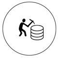

Présentation
Bienvenue sur DATA Worker, ici vous trouverez
tous les métiers en lien avec l’analyse, l’exploitation et la mise
en valeur des données.
Ci-dessous vous pourrez accéder à chacun des
métiers du domaine de l’exploitation des données qui vous
intéresse, ou réaliser notre test afin d’avoir une idée de ce qui
pourrait le mieux vous correspondre.
Le but de DATA Worker est de permettre aux futurs travailleurs
et aux étudiants sortant de filières touchant à la technologie et à la
communication de s’informer sur des métiers peu connus, et
pourtant très recherchés, avec des possibilités d’évolutions et des
propositions d’offres d’emploi.
ADMINISTRATEUR DE BASE DES DONNÉES
L’administrateur de base des données gère les données d’une société. Il doit les rendre facile d’accès et
s’assurer que le système fonctionne en permanence.
EXPERT CYBERSÉCURITÉ
L’expert cybersécurité est chargé de protéger les données des utilisateurs contre le virus et les hacks. Il
supprime la menace et rétablit un protocole de sécurité du système.
DATA ANALYST
Le data analyst son but est d’analyser les données pour les traiter de son entreprise afin de favoriser son
fonctionnement et son développement.
DATA SCIENTIST
A data scientist is a professional responsible for collecting, analyzing and interpreting extremely large
amounts of data.

DATA MINER
Le data miner est chargé de la constitution et de l'exploitation des bases de données de l'entreprise.
DATA JOURNALIST
Data Journalists write articles based on digital information, mostly data. They beautify their stories by using
infographics.